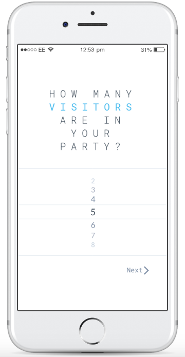
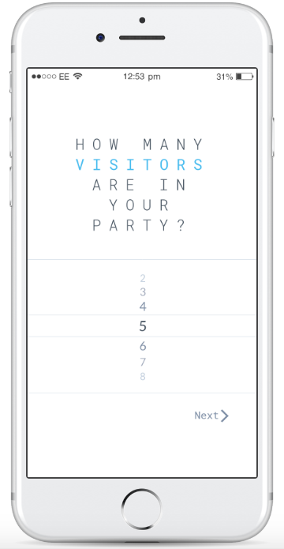

IDEATION
I took the data gathered from my interview with John and my product landscape to generate various insights that I then organized into two main categories: “path-planning and “catering to many.” By organizing these insights, I eventually decided on a mobile application for a (hypothetical) zoo that could generate a custom route for the visiting family. I knew this application would be heavily dependent on personal customization, so I also used my gathered insights to decide which attributes would be used to generate the different paths through the zoo.

 
